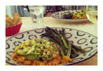
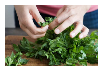
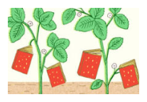

Sign up for out newsletter to receive a handpicked selection of the best stories, recipes, and news,
delivered weekly to your inbox.

2012’s Best Summer Cookbooks
With the best of the season coming from “orchards, farms and gardens,” NPR has put together an impressive collection of 10 summer cookbooks.

How to Make Vegetable Chips
About a month ago, I ate almost an entire box of kale chips. My brother and I were visiting our cousin in Brooklyn, and before a very thoughtfully prepared vagan...

Join us on Pinterest!
If I could curate a cookbook for you, this would be it.

Recipes from a Sunday Supper
I could not figure out what to do with the delectable slices of Pear Cake that I brought home from this wonderful Sunday supper - eat them slowly, a little bit at...